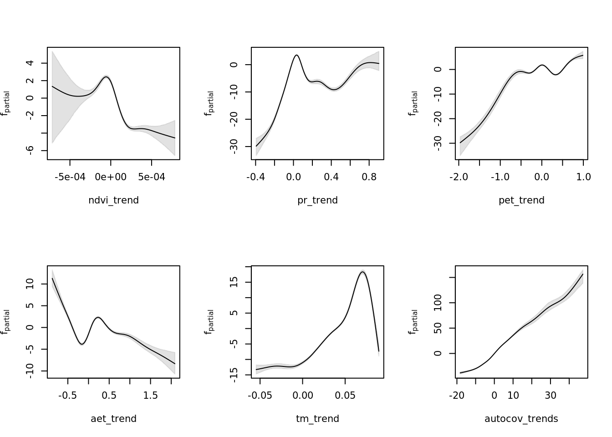

7 Quantify model uncertainty
In the previous chapter we have modelled long-term assemblage trends as a function of linear environmental trends and environmental predictability. Unfortunately using ML learners to model these relationships requires a lengthy bootstrapping procedure to quantify model uncertainty. Luckily, mboost already contains the functions to do so, we just need to make some tweaks to these functions to run this more efficiently.
7.1 Load constructed models
We load the constructed models that include a residual autocovariate term, as these are corrected mostly for the effects of spatial autocorrelation.
7.2 Bootstrap uncertainty analysis
We use an adapted version (see more here) of the bootstrapping procedure included in mboost so uncertainty estimates can be quantified efficiently, regardless of the model size or compute power.
- We determine the bootstrap folds outside of the function call, so they can be stored separately, processing can be parallelised more easily and the analysis can be stopped and resumed more easily.
- We include variable importance as variable to be bootstrapped, so uncertainty estimates around that value can be quantified too across bootstrapped folds.
- Model predictions are calculated along a finer grid along variables of interest (e.g. 1000 values instead of 100).
The implemented procedure uses resampling of the model dataset (already a subsample of 10000 rows of the entire dataset) to derive confidence intervals. A more elegant approach would probably to derive the confidence intervals from a repeated resampling of the entire dataset of hundreds of thousands of rows. For now, however, this implementation suffices to give a good indication of model uncertainty.
7.2.1 Determine bootstrap folds
We want to judge both constructed models equally, so we use the same bootstrapping folds for both.
bfolds <- 1000
weights <- model.weights(mod_trends)
set.seed(42)
folds <- cv(weights, B = bfolds, type = "bootstrap")
saveRDS(folds, "data/processed/models/confints/folds.RDS")7.2.2 Run bootstrap procedure
It is very computationally intensive to run the bootstrapping procedure, so it’s best initiated manually by tweaking settings to the local machine. See the solution implemented in R/mboost_uncertainty_analysis.R. We run this analysis manually and store the results in data/processed/models/confints/.
source("R/mboost_uncertainty_analysis.R")7.2.3 Recombine bootstrapped results
Having chunked and parallellized the bootstrapping procedure, we need to stitch the results back together to a single R object that matches the initial implementation in the mboost package.
merge_bootci <- function(pathpattern, max_n, outfile) {
cis <- lapply(paste0(pathpattern, 1:max_n, ".RDS")[2:1000], readRDS)
ci_boot_pred <- lapply(cis, function(x) x$boot_pred)
ci_varimp <- lapply(cis, function(x) x$varimp)
modelci <- readRDS(paste0(pathpattern, 1, ".RDS"))
modelci$boot_pred[2:1000] <- ci_boot_pred
modelci$boot_pred[1] <- NULL
modelci$data <- cis[[1]]$data
modelci$varimp <- ci_varimp
saveRDS(modelci, file = outfile)
return(modelci)
}
modelci_trends <- merge_bootci("data/processed/models/confints/modelci_trends_rac_", max_n = 1000,
outfile = "data/processed/models/confints/modelci_trends.RDS")
modelci_resids <- merge_bootci("data/processed/models/confints/modelci_resids_rac_", max_n = 1000,
outfile = "data/processed/models/confints/modelci_resids.RDS")Let’s confirm that worked by plotting the bootstrapped confidence intervals. First for the trends model.
vars_trends <- as.data.frame(modelci_trends$data) %>% colnames()
par(mfrow = c(2, 3))
lapply(vars_trends, function(x) plot(modelci_trends, which = x))
And now for the predictability (resids) model.
vars_resids <- as.data.frame(modelci_resids$data) %>% colnames()
par(mfrow = c(2, 3))
lapply(vars_resids, function(x) plot(modelci_resids, which = x))